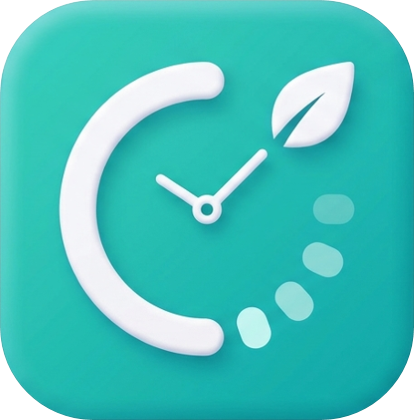

Select Active Workspace
Access standalone modules engineered for high-performance productivity and tracking.
Habit Tracker
Monitor daily streaks, visualize habit consistency, and build long-term routines.
Open Application
Task Manager
Organize workflows, assign matrix priorities, and maintain structured action lists.
Open Application

Time Manager
Execute Pomodoro focus sessions, ambient audio integration, and time tracking loggers.
Open Application